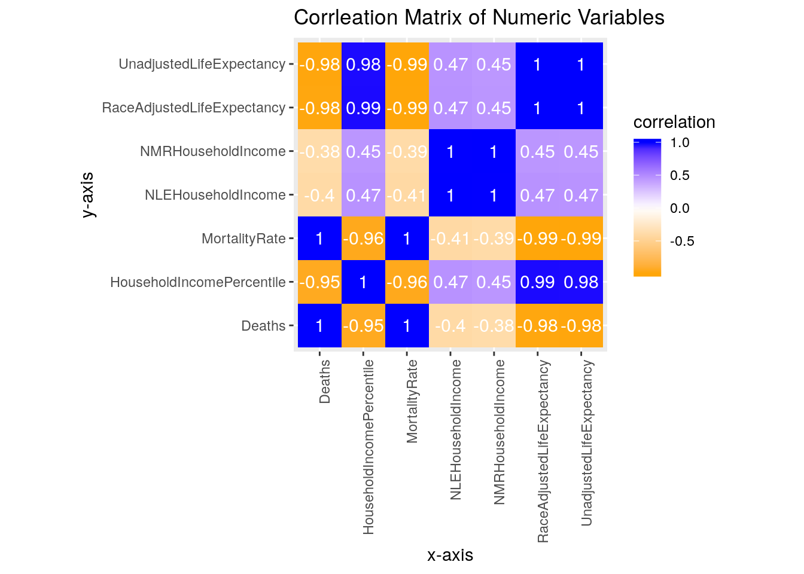
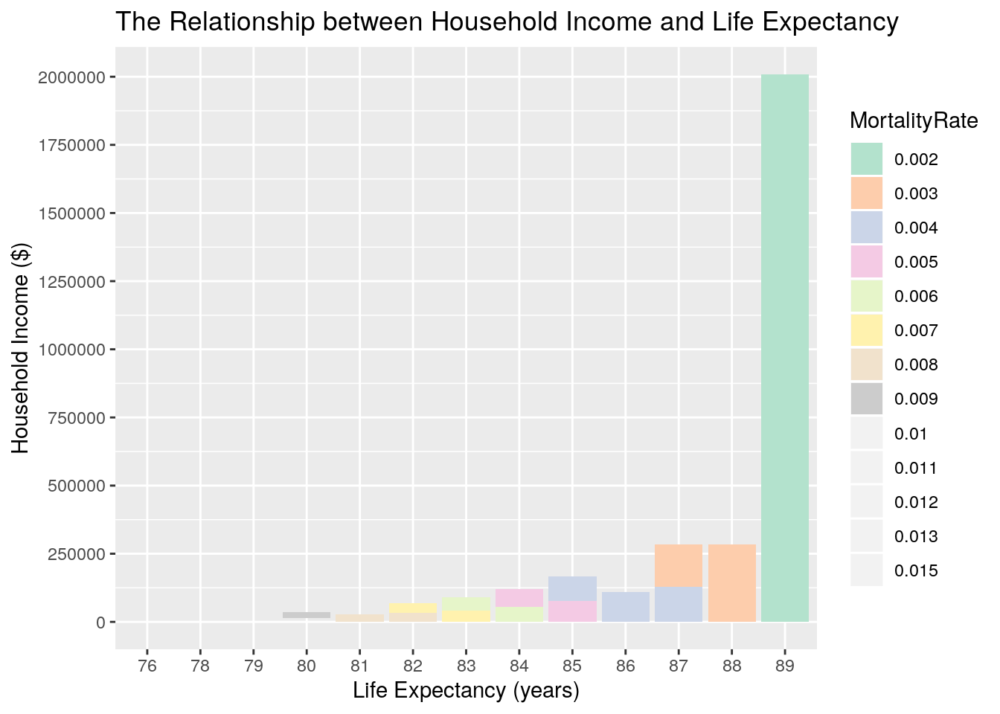
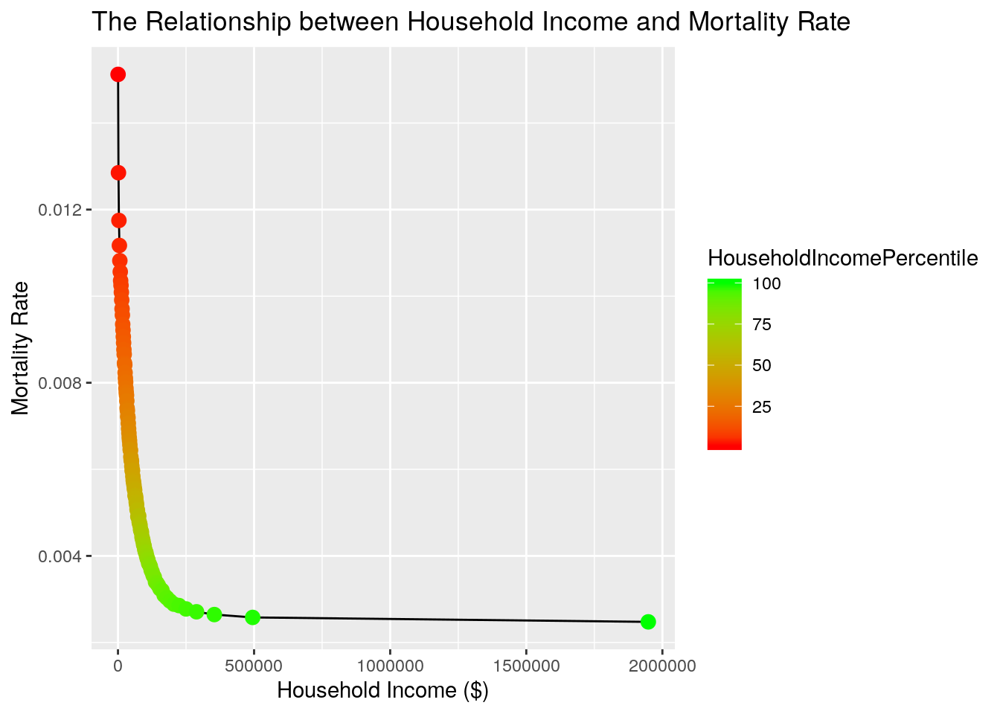
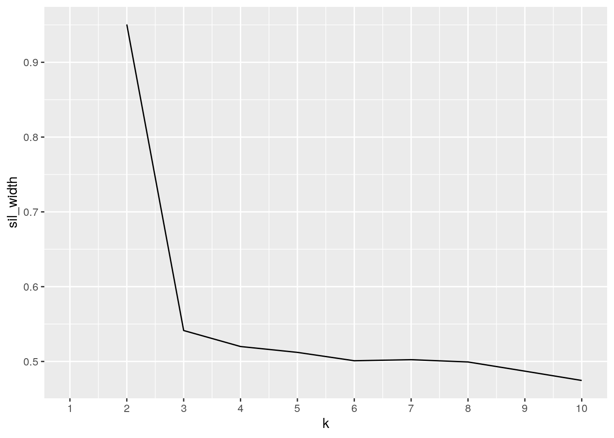
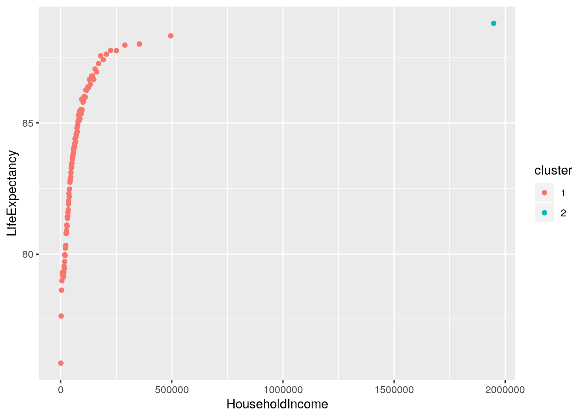

Though healthcare is primarily considers the biological underpinnings of disease, recent developments have shifted the field of healthcare towards a more holistic approach, considering all facets of an individuals life that may affect their health. One such factor is economic status, often represented as household income. Therefore, in this exploratory data analysis, two datasets from the health inequality project will be joined and analyzed. The first dataset focuses on life expectancy and household income, with variables that include Gender, Household Income Percentile, Year, Count, Mean Household Income, Race-Adjusted Life Expectancy, Unadjusted Life Expectancy, Standard Error of Race-Adjusted Life Expectancy, and Standard Error of Unadjusted Life Expectancy. The second dataset focuses on mortality rate and household income, with variables that include Gender, Household Income Percentile, Age at Death, Year of Death, Income Lag, Mortality Rate, Mean Household Income, Numerator of mortrate, and Denominator of mortrate (alive at beginning of year). We expect there to exist a positive relationship between life expectancy and household income and a negative relationship between household income and mortality rate. These findings may provide interesting insight into the inequality within healthcare.
library(dplyr)
library(tidyr)
library(ggplot2)
library(tibble)
library(cluster)NationalLifeExpectancy_Original <- read.csv("health_ineq_online_table_2.csv")
head(NationalLifeExpectancy_Original)## gnd pctile year count hh_inc le_agg le_raceadj sd_le_agg sd_le_raceadj
## 1 F 1 2001 398740 499.1094 79.68207 79.89346 0.3928378 0.3852398
## 2 F 1 2002 411159 541.3070 79.18359 79.41062 0.3539808 0.3468173
## 3 F 1 2003 420298 529.1391 79.36441 79.57217 0.3647805 0.3590969
## 4 F 1 2004 427728 499.2995 79.89841 80.09248 0.3520185 0.3479916
## 5 F 1 2005 433665 474.1454 80.28360 80.46594 0.3346116 0.3309857
## 6 F 1 2006 438605 446.6483 79.51386 79.70161 0.3397771 0.3366041NationalMortalityRates_Original <- read.csv("health_ineq_online_table_15.csv")
head(NationalMortalityRates_Original)## gnd pctile age_at_d yod lag mortrate hh_inc deaths count
## 1 F 1 40 2001 2 0.004409376 364.8230 95 21545
## 2 F 1 40 2002 2 0.005786011 383.6687 124 21431
## 3 F 1 40 2003 2 0.005046456 374.7329 107 21203
## 4 F 1 40 2004 2 0.004786979 370.5288 100 20890
## 5 F 1 40 2005 2 0.004724649 356.1439 93 19684
## 6 F 1 40 2006 2 0.005372380 347.1992 102 18986NationalLifeExpectancy <- NationalLifeExpectancy_Original %>% select(-year, -gnd, -sd_le_agg, -sd_le_raceadj, -count) %>% group_by(pctile) %>% summarize_all(mean) %>% mutate(pctile = as.numeric(pctile)) %>% arrange(pctile) %>% rename(HouseholdIncomePercentile = pctile, HouseholdIncome = hh_inc, UnadjustedLifeExpectancy = le_agg, RaceAdjustedLifeExpectancy = le_raceadj)
head(NationalLifeExpectancy)## # A tibble: 6 x 4
## HouseholdIncomePerc… HouseholdIncome UnadjustedLifeExpec… RaceAdjustedLifeExp…
## <dbl> <dbl> <dbl> <dbl>
## 1 1 387. 75.5 75.9
## 2 2 1727. 77.4 77.6
## 3 3 3421. 78.4 78.6
## 4 4 5138. 78.8 79.0
## 5 5 6781. 79.1 79.2
## 6 6 8317. 79.2 79.3NationalMortalityRates <- NationalMortalityRates_Original %>% select(-yod, -gnd, -count, -age_at_d, -lag) %>% group_by(pctile) %>% summarize_all(mean) %>% mutate(pctile = as.numeric(pctile)) %>% arrange(pctile) %>% rename(HouseholdIncomePercentile = pctile, MortalityRate = mortrate, HouseholdIncome = hh_inc, Deaths = deaths)
head(NationalMortalityRates)## # A tibble: 6 x 4
## HouseholdIncomePercentile MortalityRate HouseholdIncome Deaths
## <dbl> <dbl> <dbl> <dbl>
## 1 1 0.0151 412. 212.
## 2 2 0.0129 1827. 179.
## 3 3 0.0117 3568. 163.
## 4 4 0.0112 5298. 154.
## 5 5 0.0108 6938. 149.
## 6 6 0.0106 8470. 144.After preparation of the datasets, in which unnecessary variables were removed and averages were obtained for the redundancies in the variable we planned to merge the datasets with, we first untidied both datasets and then tidied them. To untidy the datasets we used the pivot_wider() function to assign each observation to a single column with our variables listed in the names of the column alongside our variable we plan to merge the datasets with, Household Income Percentile. Following the untidying process, we tidied our data by separating the variables in the name from our Household Income Percentile variable using pivot_longer() and then using pivot_wider() to reassign each of our variables to its own column.
NationalLifeExpectancy_Untidy <- NationalLifeExpectancy %>% pivot_wider(names_from = "HouseholdIncomePercentile", values_from = c("HouseholdIncome", "UnadjustedLifeExpectancy", "RaceAdjustedLifeExpectancy"))
head(NationalLifeExpectancy_Untidy)## # A tibble: 1 x 300
## HouseholdIncome… HouseholdIncome… HouseholdIncome… HouseholdIncome…
## <dbl> <dbl> <dbl> <dbl>
## 1 387. 1727. 3421. 5138.
## # … with 296 more variables: HouseholdIncome_5 <dbl>, HouseholdIncome_6 <dbl>,
## # HouseholdIncome_7 <dbl>, HouseholdIncome_8 <dbl>, HouseholdIncome_9 <dbl>,
## # HouseholdIncome_10 <dbl>, HouseholdIncome_11 <dbl>,
## # HouseholdIncome_12 <dbl>, HouseholdIncome_13 <dbl>,
## # HouseholdIncome_14 <dbl>, HouseholdIncome_15 <dbl>,
## # HouseholdIncome_16 <dbl>, HouseholdIncome_17 <dbl>,
## # HouseholdIncome_18 <dbl>, HouseholdIncome_19 <dbl>,
## # HouseholdIncome_20 <dbl>, HouseholdIncome_21 <dbl>,
## # HouseholdIncome_22 <dbl>, HouseholdIncome_23 <dbl>,
## # HouseholdIncome_24 <dbl>, HouseholdIncome_25 <dbl>,
## # HouseholdIncome_26 <dbl>, HouseholdIncome_27 <dbl>,
## # HouseholdIncome_28 <dbl>, HouseholdIncome_29 <dbl>,
## # HouseholdIncome_30 <dbl>, HouseholdIncome_31 <dbl>,
## # HouseholdIncome_32 <dbl>, HouseholdIncome_33 <dbl>,
## # HouseholdIncome_34 <dbl>, HouseholdIncome_35 <dbl>,
## # HouseholdIncome_36 <dbl>, HouseholdIncome_37 <dbl>,
## # HouseholdIncome_38 <dbl>, HouseholdIncome_39 <dbl>,
## # HouseholdIncome_40 <dbl>, HouseholdIncome_41 <dbl>,
## # HouseholdIncome_42 <dbl>, HouseholdIncome_43 <dbl>,
## # HouseholdIncome_44 <dbl>, HouseholdIncome_45 <dbl>,
## # HouseholdIncome_46 <dbl>, HouseholdIncome_47 <dbl>,
## # HouseholdIncome_48 <dbl>, HouseholdIncome_49 <dbl>,
## # HouseholdIncome_50 <dbl>, HouseholdIncome_51 <dbl>,
## # HouseholdIncome_52 <dbl>, HouseholdIncome_53 <dbl>,
## # HouseholdIncome_54 <dbl>, HouseholdIncome_55 <dbl>,
## # HouseholdIncome_56 <dbl>, HouseholdIncome_57 <dbl>,
## # HouseholdIncome_58 <dbl>, HouseholdIncome_59 <dbl>,
## # HouseholdIncome_60 <dbl>, HouseholdIncome_61 <dbl>,
## # HouseholdIncome_62 <dbl>, HouseholdIncome_63 <dbl>,
## # HouseholdIncome_64 <dbl>, HouseholdIncome_65 <dbl>,
## # HouseholdIncome_66 <dbl>, HouseholdIncome_67 <dbl>,
## # HouseholdIncome_68 <dbl>, HouseholdIncome_69 <dbl>,
## # HouseholdIncome_70 <dbl>, HouseholdIncome_71 <dbl>,
## # HouseholdIncome_72 <dbl>, HouseholdIncome_73 <dbl>,
## # HouseholdIncome_74 <dbl>, HouseholdIncome_75 <dbl>,
## # HouseholdIncome_76 <dbl>, HouseholdIncome_77 <dbl>,
## # HouseholdIncome_78 <dbl>, HouseholdIncome_79 <dbl>,
## # HouseholdIncome_80 <dbl>, HouseholdIncome_81 <dbl>,
## # HouseholdIncome_82 <dbl>, HouseholdIncome_83 <dbl>,
## # HouseholdIncome_84 <dbl>, HouseholdIncome_85 <dbl>,
## # HouseholdIncome_86 <dbl>, HouseholdIncome_87 <dbl>,
## # HouseholdIncome_88 <dbl>, HouseholdIncome_89 <dbl>,
## # HouseholdIncome_90 <dbl>, HouseholdIncome_91 <dbl>,
## # HouseholdIncome_92 <dbl>, HouseholdIncome_93 <dbl>,
## # HouseholdIncome_94 <dbl>, HouseholdIncome_95 <dbl>,
## # HouseholdIncome_96 <dbl>, HouseholdIncome_97 <dbl>,
## # HouseholdIncome_98 <dbl>, HouseholdIncome_99 <dbl>,
## # HouseholdIncome_100 <dbl>, UnadjustedLifeExpectancy_1 <dbl>,
## # UnadjustedLifeExpectancy_2 <dbl>, UnadjustedLifeExpectancy_3 <dbl>,
## # UnadjustedLifeExpectancy_4 <dbl>, …NationalMortalityRates_Untidy <- NationalMortalityRates %>% pivot_wider(names_from = "HouseholdIncomePercentile", values_from = c("MortalityRate", "HouseholdIncome", "Deaths"))
head(NationalMortalityRates_Untidy)## # A tibble: 1 x 300
## MortalityRate_1 MortalityRate_2 MortalityRate_3 MortalityRate_4
## <dbl> <dbl> <dbl> <dbl>
## 1 0.0151 0.0129 0.0117 0.0112
## # … with 296 more variables: MortalityRate_5 <dbl>, MortalityRate_6 <dbl>,
## # MortalityRate_7 <dbl>, MortalityRate_8 <dbl>, MortalityRate_9 <dbl>,
## # MortalityRate_10 <dbl>, MortalityRate_11 <dbl>, MortalityRate_12 <dbl>,
## # MortalityRate_13 <dbl>, MortalityRate_14 <dbl>, MortalityRate_15 <dbl>,
## # MortalityRate_16 <dbl>, MortalityRate_17 <dbl>, MortalityRate_18 <dbl>,
## # MortalityRate_19 <dbl>, MortalityRate_20 <dbl>, MortalityRate_21 <dbl>,
## # MortalityRate_22 <dbl>, MortalityRate_23 <dbl>, MortalityRate_24 <dbl>,
## # MortalityRate_25 <dbl>, MortalityRate_26 <dbl>, MortalityRate_27 <dbl>,
## # MortalityRate_28 <dbl>, MortalityRate_29 <dbl>, MortalityRate_30 <dbl>,
## # MortalityRate_31 <dbl>, MortalityRate_32 <dbl>, MortalityRate_33 <dbl>,
## # MortalityRate_34 <dbl>, MortalityRate_35 <dbl>, MortalityRate_36 <dbl>,
## # MortalityRate_37 <dbl>, MortalityRate_38 <dbl>, MortalityRate_39 <dbl>,
## # MortalityRate_40 <dbl>, MortalityRate_41 <dbl>, MortalityRate_42 <dbl>,
## # MortalityRate_43 <dbl>, MortalityRate_44 <dbl>, MortalityRate_45 <dbl>,
## # MortalityRate_46 <dbl>, MortalityRate_47 <dbl>, MortalityRate_48 <dbl>,
## # MortalityRate_49 <dbl>, MortalityRate_50 <dbl>, MortalityRate_51 <dbl>,
## # MortalityRate_52 <dbl>, MortalityRate_53 <dbl>, MortalityRate_54 <dbl>,
## # MortalityRate_55 <dbl>, MortalityRate_56 <dbl>, MortalityRate_57 <dbl>,
## # MortalityRate_58 <dbl>, MortalityRate_59 <dbl>, MortalityRate_60 <dbl>,
## # MortalityRate_61 <dbl>, MortalityRate_62 <dbl>, MortalityRate_63 <dbl>,
## # MortalityRate_64 <dbl>, MortalityRate_65 <dbl>, MortalityRate_66 <dbl>,
## # MortalityRate_67 <dbl>, MortalityRate_68 <dbl>, MortalityRate_69 <dbl>,
## # MortalityRate_70 <dbl>, MortalityRate_71 <dbl>, MortalityRate_72 <dbl>,
## # MortalityRate_73 <dbl>, MortalityRate_74 <dbl>, MortalityRate_75 <dbl>,
## # MortalityRate_76 <dbl>, MortalityRate_77 <dbl>, MortalityRate_78 <dbl>,
## # MortalityRate_79 <dbl>, MortalityRate_80 <dbl>, MortalityRate_81 <dbl>,
## # MortalityRate_82 <dbl>, MortalityRate_83 <dbl>, MortalityRate_84 <dbl>,
## # MortalityRate_85 <dbl>, MortalityRate_86 <dbl>, MortalityRate_87 <dbl>,
## # MortalityRate_88 <dbl>, MortalityRate_89 <dbl>, MortalityRate_90 <dbl>,
## # MortalityRate_91 <dbl>, MortalityRate_92 <dbl>, MortalityRate_93 <dbl>,
## # MortalityRate_94 <dbl>, MortalityRate_95 <dbl>, MortalityRate_96 <dbl>,
## # MortalityRate_97 <dbl>, MortalityRate_98 <dbl>, MortalityRate_99 <dbl>,
## # MortalityRate_100 <dbl>, HouseholdIncome_1 <dbl>, HouseholdIncome_2 <dbl>,
## # HouseholdIncome_3 <dbl>, HouseholdIncome_4 <dbl>, …NationalLifeExpectancy_Tidy <- NationalLifeExpectancy_Untidy %>% pivot_longer(contains("_")) %>% separate(name,into=c("Type","HouseholdIncomePercentile")) %>% pivot_wider(names_from="Type",values_from="value")
head(NationalLifeExpectancy_Tidy)## # A tibble: 6 x 4
## HouseholdIncomePerc… HouseholdIncome UnadjustedLifeExpec… RaceAdjustedLifeExp…
## <chr> <dbl> <dbl> <dbl>
## 1 1 387. 75.5 75.9
## 2 2 1727. 77.4 77.6
## 3 3 3421. 78.4 78.6
## 4 4 5138. 78.8 79.0
## 5 5 6781. 79.1 79.2
## 6 6 8317. 79.2 79.3NationalMortalityRates_Tidy <- NationalMortalityRates_Untidy %>% pivot_longer(contains("_")) %>% separate(name,into=c("Type","HouseholdIncomePercentile")) %>% pivot_wider(names_from="Type",values_from="value")
head(NationalMortalityRates_Tidy)## # A tibble: 6 x 4
## HouseholdIncomePercentile MortalityRate HouseholdIncome Deaths
## <chr> <dbl> <dbl> <dbl>
## 1 1 0.0151 412. 212.
## 2 2 0.0129 1827. 179.
## 3 3 0.0117 3568. 163.
## 4 4 0.0112 5298. 154.
## 5 5 0.0108 6938. 149.
## 6 6 0.0106 8470. 144.Once the two datasets were pepared and tidy, the datasets were merged using a full join so that all of the variables from both datasets would be included to create a comprehensive dataset encapsulating all of the information. Idential variables present in both datasets were renamed with a tag associating them with their original dataset; therefore, information from both can be distinguished and retained. No cases were dropped.
National_MergedData <- full_join(NationalLifeExpectancy_Tidy, NationalMortalityRates_Tidy, by="HouseholdIncomePercentile") %>% rename(NLEHouseholdIncome = HouseholdIncome.x, NMRHouseholdIncome = HouseholdIncome.y)
head(National_MergedData)## # A tibble: 6 x 7
## HouseholdIncome… NLEHouseholdInc… UnadjustedLifeE… RaceAdjustedLif…
## <chr> <dbl> <dbl> <dbl>
## 1 1 387. 75.5 75.9
## 2 2 1727. 77.4 77.6
## 3 3 3421. 78.4 78.6
## 4 4 5138. 78.8 79.0
## 5 5 6781. 79.1 79.2
## 6 6 8317. 79.2 79.3
## # … with 3 more variables: MortalityRate <dbl>, NMRHouseholdIncome <dbl>,
## # Deaths <dbl>Now that the two separate datasets were merged into one dataset named “National_MergedData” we can create summary statistics of the data using the dplyr functions. To meet the requirements of the assignment, the first block of code uses each dplyr function individually in unique ways to explore the dataset. These unique explorations are explained within the comments. Following the exploration, the specific summmary statistics of mean, standard deviation, variace, minimum, maximum, number of unique values, last value, first value, IQR, median and correlation were calculated for all numeric variables without grouping and with grouping by the rounded values of race adjusted life expectancy that were converted from numeric values into characters.
The results of the data analysis/wrangling show that the average values for each variable are: 9.764774e+04 US dollars for NLE household income, 83.627406 years for unadjusted life expectancy, 83.672665 years for race adjusted life expectancy, 6.074249e-03 for mortality rate, 9.799557e+04 for NMR household income, and 80.23393 deaths for number of deaths per year. All variables have relatively normally skewed even distributions with expected standard deviations, except for household incomes for both NMR and NLE datasets. The NMR and NLE datasets have a standard deviation of 1.959262e+05 US dollars, a minimum of 3.870868e+02 US dollars, and a maximum of 1.887876e+06 US dollars. Out of all variables in the data set, this provides the most unique distribution that has incredibly large outliers on the high end of the range. This will serve as an interesting point of analysis to see how income affects health outcomes.
#using filter() function to obtain quantile information
National_MergedData_filterfunction <- National_MergedData %>% filter(HouseholdIncomePercentile == c("25", "50", "75"))
head(National_MergedData_filterfunction)## # A tibble: 3 x 7
## HouseholdIncome… NLEHouseholdInc… UnadjustedLifeE… RaceAdjustedLif…
## <chr> <dbl> <dbl> <dbl>
## 1 25 30411. 81.3 81.4
## 2 50 60528. 84.0 84.1
## 3 75 103689. 85.8 85.8
## # … with 3 more variables: MortalityRate <dbl>, NMRHouseholdIncome <dbl>,
## # Deaths <dbl>#using select() function to obtain averages over all variables that would be meaningful to average
National_MergedData_selectfunction <- National_MergedData %>% select("LifeExpectancy" = RaceAdjustedLifeExpectancy, MortalityRate, "HouseholdIncome" = NMRHouseholdIncome) %>% summarize_all(mean)
#using arrange() function to sort data based on life expectancy to see if life expectancy exactly follows increase in household income percentile
National_MergedData_arrangeFunction <- National_MergedData %>% arrange(RaceAdjustedLifeExpectancy) %>% select(HouseholdIncomePercentile, RaceAdjustedLifeExpectancy)
head(National_MergedData_arrangeFunction)## # A tibble: 6 x 2
## HouseholdIncomePercentile RaceAdjustedLifeExpectancy
## <chr> <dbl>
## 1 1 75.9
## 2 2 77.6
## 3 3 78.6
## 4 4 79.0
## 5 8 79.1
## 6 7 79.2#using group_by(), mutate(), and summarize() function to determine the household incomes based on each value of life expectancy rounded to the nearest year
National_MergedData_groupby_mutate_summarizefuncitons <- National_MergedData %>% mutate(LifeExpectancy = round(RaceAdjustedLifeExpectancy), HouseholdIncome = (NLEHouseholdIncome + NMRHouseholdIncome)/2) %>% select(LifeExpectancy, HouseholdIncome) %>% group_by(LifeExpectancy) %>% summarize(mean(HouseholdIncome))
head(National_MergedData_groupby_mutate_summarizefuncitons)## # A tibble: 6 x 2
## LifeExpectancy `mean(HouseholdIncome)`
## <dbl> <dbl>
## 1 76 400.
## 2 78 1777.
## 3 79 9719.
## 4 80 19415.
## 5 81 27703.
## 6 82 36321.#Summary Statistics without Grouping
National_MergedDataSummaryStats <- National_MergedData %>% select_if(is.numeric) %>% summarize_all(funs(mean, sd, var, min, max, n_distinct, first, last, IQR, median))
#reshaping
National_MergedDataSummaryStatsReshaped <- National_MergedDataSummaryStats %>% pivot_longer(contains("_")) %>% separate(name,into=c("Variable","SummaryStatistic")) %>% pivot_wider(names_from="Variable", values_from="value")
head(National_MergedDataSummaryStatsReshaped)## # A tibble: 6 x 7
## SummaryStatistic NLEHouseholdInc… UnadjustedLifeE… RaceAdjustedLif…
## <chr> <dbl> <dbl> <dbl>
## 1 mean 97648. 83.6 83.7
## 2 sd 195926. 2.87 2.84
## 3 var 38387073925. 8.26 8.07
## 4 min 387. 75.5 75.9
## 5 max 1887876. 88.7 88.8
## 6 n 100 100 100
## # … with 3 more variables: MortalityRate <dbl>, NMRHouseholdIncome <dbl>,
## # Deaths <dbl>#correlation
National_MergedDataCor <- National_MergedData %>% select_if(is.numeric) %>% cor()
National_MergedDataCor## NLEHouseholdIncome UnadjustedLifeExpectancy
## NLEHouseholdIncome 1.0000000 0.4652375
## UnadjustedLifeExpectancy 0.4652375 1.0000000
## RaceAdjustedLifeExpectancy 0.4679424 0.9998979
## MortalityRate -0.4108415 -0.9899329
## NMRHouseholdIncome 0.9997420 0.4478042
## Deaths -0.4006604 -0.9841404
## RaceAdjustedLifeExpectancy MortalityRate
## NLEHouseholdIncome 0.4679424 -0.4108415
## UnadjustedLifeExpectancy 0.9998979 -0.9899329
## RaceAdjustedLifeExpectancy 1.0000000 -0.9885273
## MortalityRate -0.9885273 1.0000000
## NMRHouseholdIncome 0.4505037 -0.3939648
## Deaths -0.9823462 0.9992739
## NMRHouseholdIncome Deaths
## NLEHouseholdIncome 0.9997420 -0.4006604
## UnadjustedLifeExpectancy 0.4478042 -0.9841404
## RaceAdjustedLifeExpectancy 0.4505037 -0.9823462
## MortalityRate -0.3939648 0.9992739
## NMRHouseholdIncome 1.0000000 -0.3840298
## Deaths -0.3840298 1.0000000#Summary Statistics with Grouping
National_MergedDataSummaryStatsGrouping <- National_MergedData %>% select(-HouseholdIncomePercentile, -UnadjustedLifeExpectancy) %>% mutate(LifeExpectancy = round(RaceAdjustedLifeExpectancy)) %>% group_by(LifeExpectancy) %>% summarize_all(funs(mean, sd, var, min, max, n_distinct, first, last, IQR, median))
#Reshaping
National_MergedDataSummaryStatsGroupingReshaped <- National_MergedDataSummaryStatsGrouping %>% pivot_longer(contains("_")) %>% separate(name,into=c("Variable","SummaryStatistic")) %>% pivot_wider(names_from="Variable", values_from="value")
head(National_MergedDataSummaryStatsGroupingReshaped)## # A tibble: 6 x 7
## LifeExpectancy SummaryStatistic NLEHouseholdInc… RaceAdjustedLif…
## <dbl> <chr> <dbl> <dbl>
## 1 76 mean 387. 75.9
## 2 76 sd NA NA
## 3 76 var NA NA
## 4 76 min 387. 75.9
## 5 76 max 387. 75.9
## 6 76 n 1 1
## # … with 3 more variables: MortalityRate <dbl>, NMRHouseholdIncome <dbl>,
## # Deaths <dbl>#Correlation
National_MergedDataCorGrouping <- National_MergedData %>% select(-HouseholdIncomePercentile, -UnadjustedLifeExpectancy) %>% mutate(LifeExpectancy = round(RaceAdjustedLifeExpectancy)) %>% group_by(LifeExpectancy) %>% select_if(is.numeric) %>% cor()
National_MergedDataCorGrouping## NLEHouseholdIncome RaceAdjustedLifeExpectancy
## NLEHouseholdIncome 1.0000000 0.4679424
## RaceAdjustedLifeExpectancy 0.4679424 1.0000000
## MortalityRate -0.4108415 -0.9885273
## NMRHouseholdIncome 0.9997420 0.4505037
## Deaths -0.4006604 -0.9823462
## LifeExpectancy 0.4745963 0.9951999
## MortalityRate NMRHouseholdIncome Deaths
## NLEHouseholdIncome -0.4108415 0.9997420 -0.4006604
## RaceAdjustedLifeExpectancy -0.9885273 0.4505037 -0.9823462
## MortalityRate 1.0000000 -0.3939648 0.9992739
## NMRHouseholdIncome -0.3939648 1.0000000 -0.3840298
## Deaths 0.9992739 -0.3840298 1.0000000
## LifeExpectancy -0.9808763 0.4572643 -0.9740204
## LifeExpectancy
## NLEHouseholdIncome 0.4745963
## RaceAdjustedLifeExpectancy 0.9951999
## MortalityRate -0.9808763
## NMRHouseholdIncome 0.4572643
## Deaths -0.9740204
## LifeExpectancy 1.0000000Given that the data has been summarized and analyzed for unique relationships/findings between the variables, visualization of the findings must follow to create an easily-understandable and informative graphic. The first visualization plot created will be a correlation heatmap in which each numeric variable will be plotted against each other numeric variable in a 2-dimensional map that indicates the strength and direction of the correlation. This allows for easy identification of the relationships between any and all numeric variables. Based on the summary statistics computed from wrangling and the correlation values from the heatmap, two subsequent visualizaiton plots were created to underscore the relationship between household income and life expectancy as well as the relationship between household income and mortality rate.
#Convert Dataframe to Only Numerics
National_MergedDataNumericOnly <- National_MergedData %>% mutate(HouseholdIncomePercentile = as.numeric(HouseholdIncomePercentile))
#Tidy Correlations
CorrelationHeatmap <- cor(National_MergedDataNumericOnly) %>% as.data.frame %>% rownames_to_column %>% pivot_longer(-1, names_to="name" ,values_to="correlation")
head(CorrelationHeatmap)## # A tibble: 6 x 3
## rowname name correlation
## <chr> <chr> <dbl>
## 1 HouseholdIncomePercentile HouseholdIncomePercentile 1
## 2 HouseholdIncomePercentile NLEHouseholdIncome 0.472
## 3 HouseholdIncomePercentile UnadjustedLifeExpectancy 0.985
## 4 HouseholdIncomePercentile RaceAdjustedLifeExpectancy 0.986
## 5 HouseholdIncomePercentile MortalityRate -0.958
## 6 HouseholdIncomePercentile NMRHouseholdIncome 0.454#Heatmap
CorrelationHeatmap %>% ggplot(aes(rowname, name, fill=correlation)) +
geom_tile() +
scale_fill_gradient2(low="orange",mid="white",high="blue") +
geom_text(aes(label=round(correlation,2)),color = "white", size = 4)+
theme(axis.text.x = element_text(angle = 90, hjust = 1)) +
coord_fixed() +
ggtitle("Corrleation Matrix of Numeric Variables") +
xlab("x-axis")+ylab("y-axis") The correlation heatmap plots each numeric variable on the x-axis against all other numeric variables on the y-axis, including the household income percentile, which was converted from a character into a numeric. Correlation coefficient values are given at the intersection of variables and visually displayed through a color-scale gradient. Correlation coefficients nearly span the entire range from -0.99 to 1. Though a correlation coefficient of 1 is the most common correlation coefficient, most of these correlations include variables being correlated with themselves or variables being correlated with variables that are similar in meaning, such as mortality rate and deaths. Some of the strongest correlations, excluding correlation coefficients with a value of 1, are the correlations between household income percentile with life expectancy and mortality. The weakest correlations are the correlations between household income with life expectancy and mortality. This difference between household income and household income percentile indicates that though the variabels household income and household income percentile are very closely related, the primary predictor of health outcomes is the relative percentile rather than the absolute value of income.
#ggplot dataframe for plot 1
National_MergedDataGGplot1 <- National_MergedData %>% mutate(LifeExpectancy = round(RaceAdjustedLifeExpectancy), MortalityRate = round(MortalityRate, digits = 3), HouseholdIncome = NMRHouseholdIncome) %>% mutate(LifeExpectancy = as.character(LifeExpectancy), MortalityRate = as.character(MortalityRate), HouseholdIncomePercentile = as.numeric(HouseholdIncomePercentile))
head(National_MergedDataGGplot1)## # A tibble: 6 x 9
## HouseholdIncome… NLEHouseholdInc… UnadjustedLifeE… RaceAdjustedLif…
## <dbl> <dbl> <dbl> <dbl>
## 1 1 387. 75.5 75.9
## 2 2 1727. 77.4 77.6
## 3 3 3421. 78.4 78.6
## 4 4 5138. 78.8 79.0
## 5 5 6781. 79.1 79.2
## 6 6 8317. 79.2 79.3
## # … with 5 more variables: MortalityRate <chr>, NMRHouseholdIncome <dbl>,
## # Deaths <dbl>, LifeExpectancy <chr>, HouseholdIncome <dbl>#ggplot 1
ggplot(National_MergedDataGGplot1, aes(x = LifeExpectancy, y = HouseholdIncome, fill = MortalityRate))+
geom_bar(stat="summary",fun.y="mean") +
scale_y_continuous(breaks=seq(0, 2000000, 250000)) +
scale_fill_brewer(palette = "Pastel2") +
ggtitle("The Relationship between Household Income and Life Expectancy") + ylab("Household Income ($)") + xlab("Life Expectancy (years)") The bar graph plots life expectancy rounded to the nearest year against household income with mortality rate mapped onto the color of each bar. The graph indicates that the range of life expectancy is 10 years between those with the lowest household income and those with the highest. Household income appears to increase linearly with life expectancy, excluding the highest life expectancy that has a significantly larger household income. These findings indicate that life expectancy is correlated with household income, but is not directly proportional. Primarily because of the outlier at the end of the life expectancy range, the data suggests that these two variables are related but reach a boundary at which household income can no longer affect life expectancy, indicating other variables are at play, such as physical human limitations. One interesting observation is dip observed in household income for those who have a life expectancy of 86 years.
#ggplot dataframe for plot 1
National_MergedDataGGplot2 <- National_MergedData %>% mutate(HouseholdIncome = ((NMRHouseholdIncome + NLEHouseholdIncome)/2), HouseholdIncomePercentile = as.numeric(HouseholdIncomePercentile))
head(National_MergedDataGGplot2)## # A tibble: 6 x 8
## HouseholdIncome… NLEHouseholdInc… UnadjustedLifeE… RaceAdjustedLif…
## <dbl> <dbl> <dbl> <dbl>
## 1 1 387. 75.5 75.9
## 2 2 1727. 77.4 77.6
## 3 3 3421. 78.4 78.6
## 4 4 5138. 78.8 79.0
## 5 5 6781. 79.1 79.2
## 6 6 8317. 79.2 79.3
## # … with 4 more variables: MortalityRate <dbl>, NMRHouseholdIncome <dbl>,
## # Deaths <dbl>, HouseholdIncome <dbl>#ggplot 2
ggplot(National_MergedDataGGplot2, aes(HouseholdIncome, MortalityRate)) +
geom_line(color = "black") +
geom_point(size=3,aes(color=HouseholdIncomePercentile)) +
scale_color_gradient(low="red", high="green") +
ggtitle("The Relationship between Household Income and Mortality Rate") + ylab("Mortality Rate") + xlab("Household Income ($)") The graph plots household income against mortality rate to visually display the correlation between the two variables. The visual shows that there is a logarithmic relationship between household income and mortality, which indicates that mortality rate is greatly affected in any increase in household income betwen the range of 0k and 125k US dollars, but has little effect between the ranges of $125k and above. This is well exmplified by the color mapped household income percentile data, which shows that any change household income percentile outside of the 98-100 percentile range will make an impact on mortality rate.
Dimensionality reduction was performed on our dataset using the clustering algorithm Partitioning around Medoids (PAM). The dataframe for PAM was specifically created to combine redundant data into three distinct and meaningful variables: life expectancy, mortality rate, and household income. Once the dataframe was created, a new dataframe was created with just the variables of interest and was analyzd based on the silhouette width of different iterations of cluster numbers. The results of the silhouette width data is plotted on a ggpplot and the cluster number with the highest silhouette width is undeniably a cluster number of 2. The PAM function is run on the dataframe with number of clusters at 2. The results are then plotted arbitrarily with the variables: household income and life expectancy. The results and summary show that clustering occurs in two clusters with one cluster only having one observation. The depiction of these two clusters does not show a distinct separation or intuitive separation in clusters. With only one observation point being significantly different, clustering may not be a suitable analysis. The data is not inherently divided into different categories and the clustering analysis visually shows this even though the summary statistics seem to indicate a clear distinction. The summary statistics for cluster 1 are 83.6210 years for life expectancy, a mortality rate of 0.006110596, and a household income of 79130.88 US dollars, while the summary statistics for cluster 2 are 88.7877 years for life expectancy, a mortality rate of 0.002475935, and a household income of 1948208.92 US dollars.
#Dataframe for PAM
National_MergedDataPAM <- National_MergedData %>% mutate(LifeExpectancy = RaceAdjustedLifeExpectancy, HouseholdIncome = ((NMRHouseholdIncome + NLEHouseholdIncome)/2))
#Determining Number of Clusters in PAM
pam_dat<-National_MergedDataPAM %>% select(LifeExpectancy, MortalityRate, HouseholdIncome)
sil_width<-vector()
for(i in 2:10){
pam_fit <- pam(pam_dat, k = i)
sil_width[i] <- pam_fit$silinfo$avg.width
}
ggplot()+geom_line(aes(x=1:10,y=sil_width))+scale_x_continuous(name="k",breaks=1:10)
#PAM
pam1 <- pam_dat %>% pam(k=2)
pam1## Medoids:
## ID LifeExpectancy MortalityRate HouseholdIncome
## [1,] 50 84.0632 0.005564397 59954.76
## [2,] 100 88.7877 0.002475935 1948208.92
## Clustering vector:
## [1] 1 1 1 1 1 1 1 1 1 1 1 1 1 1 1 1 1 1 1 1 1 1 1 1 1 1 1 1 1 1 1 1 1 1 1 1 1
## [38] 1 1 1 1 1 1 1 1 1 1 1 1 1 1 1 1 1 1 1 1 1 1 1 1 1 1 1 1 1 1 1 1 1 1 1 1 1
## [75] 1 1 1 1 1 1 1 1 1 1 1 1 1 1 1 1 1 1 1 1 1 1 1 1 1 2
## Objective function:
## build swap
## 48057.84 48057.84
##
## Available components:
## [1] "medoids" "id.med" "clustering" "objective" "isolation"
## [6] "clusinfo" "silinfo" "diss" "call" "data"#Plotting PAM
pamclust<-pam_dat %>% mutate(cluster=as.factor(pam1$clustering))
pamclust %>% ggplot(aes(HouseholdIncome,LifeExpectancy,color=cluster)) + geom_point()
#PAM Summary
pamclust %>% group_by(cluster) %>% summarize_if(is.numeric,mean,na.rm=T)## # A tibble: 2 x 4
## cluster LifeExpectancy MortalityRate HouseholdIncome
## <fct> <dbl> <dbl> <dbl>
## 1 1 83.6 0.00611 79131.
## 2 2 88.8 0.00248 1948209.National_MergedDataPAM[pam1$id.med,]## # A tibble: 2 x 9
## HouseholdIncome… NLEHouseholdInc… UnadjustedLifeE… RaceAdjustedLif…
## <chr> <dbl> <dbl> <dbl>
## 1 50 60528. 84.0 84.1
## 2 100 1887876. 88.7 88.8
## # … with 5 more variables: MortalityRate <dbl>, NMRHouseholdIncome <dbl>,
## # Deaths <dbl>, LifeExpectancy <dbl>, HouseholdIncome <dbl>…